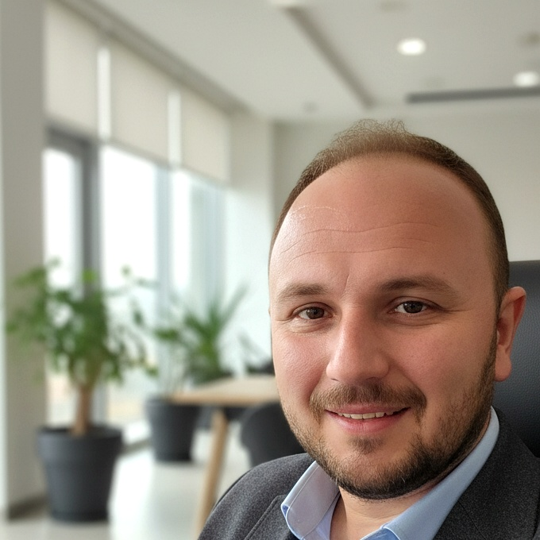

Fabrika zemininden karar odasına — çok başlı bir iş yapısını tek elden yöneten, üretime strateji ve stratejiye kazanç katan lider.

"Fabrika zeminini yürümeden strateji masasında doğru karar veremezsin. Ben her ikisini de aynı anda yaptım — ve yapmaya devam ediyorum."
Bir satış raporundan fabrika bandına, oradan çok sektörlü bir liderlik mimarisinin merkezine — bu, sıfırdan inşa edilmiş bir hikâye.
Kariyerinin her katmanını kendi elleriyle döşedi. Muhasebe kayıtlarından satış ekiplerine, tedarik zincirinden kalite protokollerine — her pozisyon hem bir mektep hem de bir sınav oldu. Bu dikey birikim ona bugün herhangi bir sürecin zayıf halkasını saniyeler içinde teşhis edebilme kapasitesini verdi. Sahayı bilen biri strateji kurduğunda, salt teoriden bakanların kaçırdığını ilk o yakalar.
Güzelce Süt Ürünleri'nde devraldığı fabrikayı sistematik bir üretim üssüne dönüştürdü: kalite güvencesi protokollerini standardize etti, vardiya yapısını yeniden kurguladı, maliyet tablosunu bizzat hazırlayarak kârlılığı izlenebilir kıldı. Tokyay Grup'ta ise EN 14081 standardı kapsamındaki CE Belgesi ve Isıl İşlem Operatörü sertifikası, teknik otoritesinin kâğıda dökülmüş belgesidir.
SAP'tan sahaya, bilançodan bant hızına — teknolojiyi yönetim aracı olarak kullanan ender profillerden biridir. Bugün Tokyay Grup çatısı altında birbirinden farklı sektörleri tek elden koordine eden Fatih Aker, her sabah yeni bir gündemin önüne geçiyor; her akşam somut sonuçlarla kalkıyor.
Tek vizyon, çoklu sektör. Kereste tezgâhından süt fabrikasına, restoran mutfağından etkinlik sahnesine — Tokyay Grup'un tüm operasyonel gücü tek merkezden yönetiliyor.